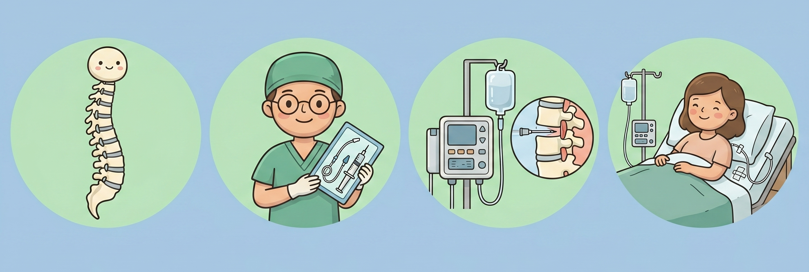
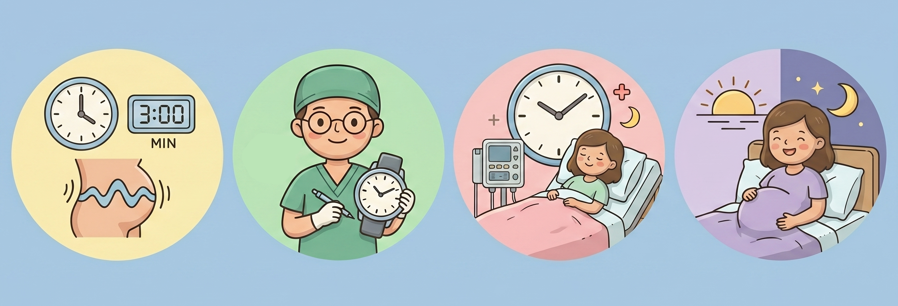
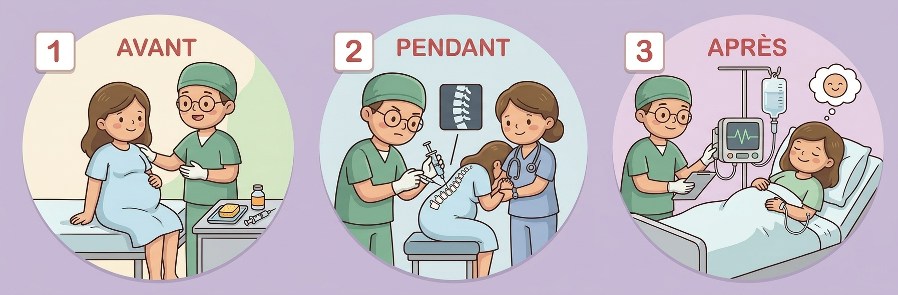
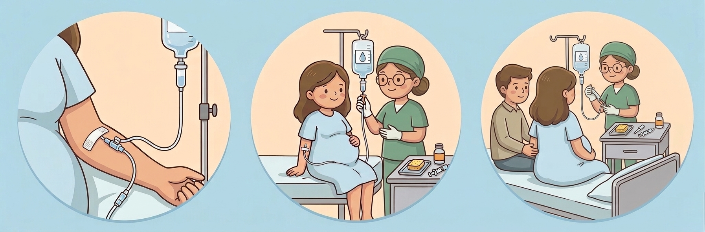
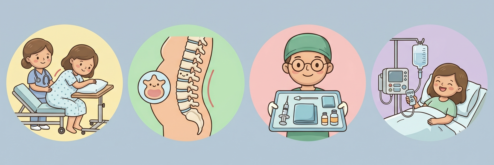
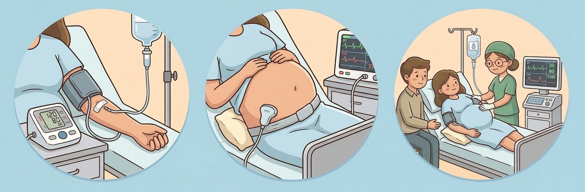
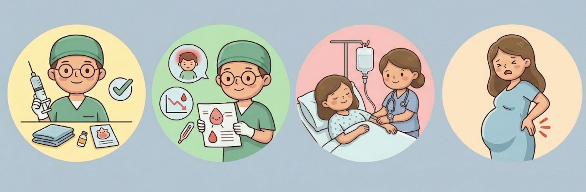
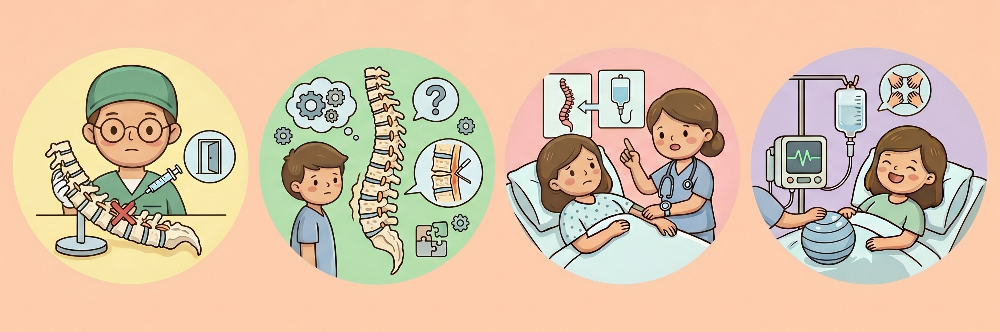
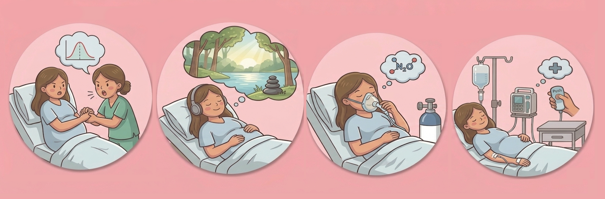

L'Épidurale durant l'accouchement
Département d’anesthésiologie - CISSS de Lanaudière (CHDL & HPLG)
L’anesthésie épidurale (ou tout simplement l’épidurale ou la péridurale) est une méthode très efficace et très sécuritaire de soulagement des douleurs accompagnant les contractions utérines de l’accouchement. Le choix d’avoir ou non une épidurale est le vôtre et n’est pas du tout essentiel au bon déroulement de votre travail; en effet, de nombreuses femmes accouchent sans épidurale.
Questions les plus fréquentes
Le temps nécessaire pour être soulagée
Il faut prévoir plusieurs étapes : un délai possible de 5 à 30 minutes avant l'arrivée de l'anesthésiste, le temps de faire la technique épidurale, et un délai supplémentaire de 10 à 20 minutes avant que le soulagement ne se fasse ressentir.
Le risque de paralyser
Des problèmes neurologiques graves tels qu'une paralysie des jambes sont décrits, mais ils sont extrêmement rares. La technique épidurale reste une technique très sécuritaire.
Les contre-indications absolues
Dans de rares cas, l'épidurale est impossible à offrir. Les contre-indications absolues incluent : certains troubles de la coagulation sanguine, la prise de médicaments anticoagulants (autres que l'aspirine), la présence d'une infection au site d'insertion, ou une pression intracrânienne trop élevée.
Qu'est-ce que l'épidurale?
L'accouchement et la douleur
Le travail menant à la naissance de votre enfant se déroule de manière progressive et la douleur est graduelle elle aussi. La localisation de la douleur peut varier durant le travail également. La perception de la douleur est différente d’une femme à l’autre et d’un accouchement à l’autre.

En quoi consiste l'épidurale?
L’épidurale consiste à injecter un médicament anesthésique à proximité des nerfs qui transmettent les sensations douloureuses. Ces nerfs ont leur origine dans la moelle épinière; c’est donc dans la région lombaire de la colonne vertébrale (dans le bas du dos) que l’anesthésiste fait l’épidurale.
Un petit cathéter de la grosseur d’un spaghetti est installé à cet endroit pour permettre de soulager la douleur tout au long du travail jusqu’à la fin de l’accouchement. Une fois le cathéter installé, vous ne le sentirez pas du tout.
L’épidurale peut soulager en partie ou en totalité la douleur des contractions. Des doses supplémentaires de médicament peuvent être ajoutées afin de mieux soulager la douleur si elle augmente, ce qui est souvent efficace (mais pas toujours).
Cette technique est très sécuritaire tant pour la mère que pour le bébé. La durée du travail peut à l’occasion être légèrement prolongée, mais il n’y a pas de risque accru de césarienne. Il est possible de continuer à bouger dans le lit une fois votre épidurale faite, mais on vous demandera de ne pas marcher étant donné que vos jambes pourraient être engourdies.
À quel moment demander l'épidurale?

L’épidurale est généralement réalisée quand le travail est bien amorcé et que votre médecin l’autorise. Vos contractions sont alors régulières, douloureuses et votre col utérin se dilate. L’anesthésiste de garde sera alors appelé pour venir faire la technique.
Un délai peut s’avérer nécessaire si l’anesthésiste est occupé au bloc opératoire ou s’il/elle doit se déplacer.
Dans certaines situations médicales précises, l’épidurale peut parfois être faite avant que le travail soit amorcé ou encore en tout début de travail, alors que les contractions ne sont pas encore très douloureuses. Votre médecin et votre anesthésiste décident alors en collaboration de vous offrir l’épidurale de manière précoce.
L'installation de l'épidurale

L'installation se fait en plusieurs étapes pour assurer votre sécurité et votre confort. Choisissez une section pour en savoir plus :
1. Avant la procédure

Avant de procéder à l’installation d’une épidurale, votre infirmière aura mesuré vos signes vitaux et vous aura posé un soluté; une prise de sang est parfois faite également.
À son arrivée, votre anesthésiste fera un bref questionnaire médical et vous expliquera le déroulement de l’installation de l’épidurale.
2. Pendant l'installation

Vous serez positionnée soit assise, soit allongée sur le côté. Pour votre sécurité, il est très important de rester immobile durant l’épidurale. On vous demandera de porter un bonnet d’hôpital pour retenir vos cheveux.
Votre anesthésiste désinfectera le bas de votre dos avec un produit antiseptique et fera une anesthésie locale au site ou sera installée l’épidurale; vous ressentirez alors une piqûre inconfortable de brève durée.
Une aiguille sera ensuite avancée doucement entre deux vertèbres; ceci ne devrait pas être douloureux, vous pourriez ressentir tout au plus une pression dans le bas du dos. Il peut arriver que vous ressentiez une sensation de courant électrique bref qui descend dans une fesse ou dans une jambe; ceci n’est pas dangereux.
Un petit cathéter sera installé et l’aiguille tout de suite retirée.
3. Après l'installation

L’ensemble de la procédure ne prend que quelques minutes habituellement, mais il faut compter jusqu’à une vingtaine de minutes avant de ressentir un soulagement des contractions. Vous pourriez avoir une impression de lourdeur dans les jambes et les sentir engourdies. Il est possible d’ajuster la dose d’épidurale si vous ressentez encore de la douleur.
Votre infirmière mesurera vos signes vitaux fréquemment durant une vingtaine de minutes suivant l’installation, puis à intervalles réguliers par la suite. La fréquence cardiaque de votre bébé sera également suivie de manière plus rapproché.
Un petit coussin sera installé sous votre fesse droite afin d’anguler votre ventre vers la gauche pour favoriser la circulation sanguine à votre bébé.
Effets indésirables et Complications

On compte parmi les effets indésirables plus fréquents de l’épidurale les réactions suivantes :
- Une diminution de pression sanguine, le plus souvent brève et facilement traitable.
- Des démangeaisons, pour lesquelles des traitements existent.
- Une faiblesse des jambes, parfois d’un côté plus que de l’autre. Ceci est facilement corrigeable en ajustant votre épidurale ou en vous repositionnant.
- Une difficulté à uriner. Si ceci se produit, votre infirmière pourra vider votre vessie à l’aide d’un petit cathéter stérile.
- Un mal de tête assez intense survenant dans les heures ou les jours suivant votre épidurale, pire en position assise ou debout et soulagé en se couchant (survient après environ 1 épidurale sur 100). Des traitements efficaces sont disponibles.
- Un inconfort ou une douleur au bas du dos qui peuvent durer jusqu’à quelques jours. Par contre, il n’existe aucun lien entre le fait de recevoir une épidurale pour accoucher et le risque de développer une douleur chronique au dos.
- Un soulagement inadéquat des contractions peut survenir dans 5 à 10% des épidurales. Parfois un endroit précis ou un côté du ventre est mal soulagé. Certaines interventions sont possibles pour améliorer le soulagement, mais il est parfois nécessaire de recommencer l’épidurale.
Complications rares
Certaines complications graves peuvent survenir à la suite d’une épidurale, mais ces complications sont rares.
- Une faiblesse ou un engourdissement persistants aux jambes peuvent survenir, mais sont habituellement dus à un mauvais positionnement durant l’accouchement et non à l’épidurale elle-même.
- Des problèmes neurologiques graves tels paralysie des jambes ou une méningite sont décrits mais sont extrêmement rares.
Contre-indications et Précautions

Contre-indications absolues
Certaines conditions médicales font en sorte que l’épidurale n’est pas sécuritaire. On reconnait entre autres :
- Certains troubles de la coagulation sanguine
- La prise de médicaments anticoagulants (autres que l’aspirine)
- La présence d’une infection au site d’insertion de l’épidurale
- Une pression intracrânienne trop élevée
Risque d'échec ou de difficulté
De plus, certaines situations peuvent rendre l’épidurale plus difficile à réaliser et augmenter le risque d’échec :
- L’obésité
- La présence d’une déformation de la colonne vertébrale, telle une scoliose
- Une ancienne chirurgie au bas du dos, surtout si des tiges métalliques ont été implantées
Précautions
Si vous souffrez de problèmes neurologiques, cardiaques ou respiratoires sérieux, parlez-en à votre anesthésiste car ils pourraient avoir un impact sur la prise en charge de votre accouchement.
Pourquoi prévoir un PLAN B à l'épidurale?

Bien que l'épidurale soit une excellente option, il est prudent d'avoir d'autres outils de gestion de la douleur, car certaines situations peuvent se présenter :